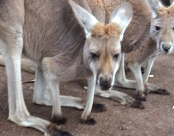
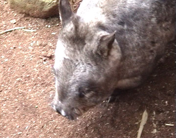
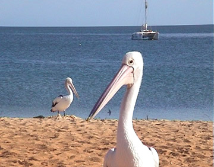
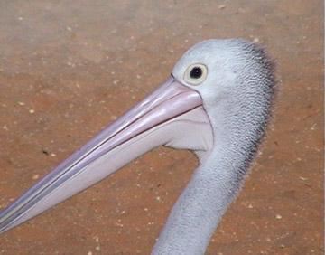

Wildlife
Marsupials - koala:
Marsupials - kangaroos:

Marsupials - quokkas:
Only found on Rottnest Island and one or two other spots:
Marsupials - misc:

Dolphins - see
Shark Bay
Birds:
 
Lizards:
main page